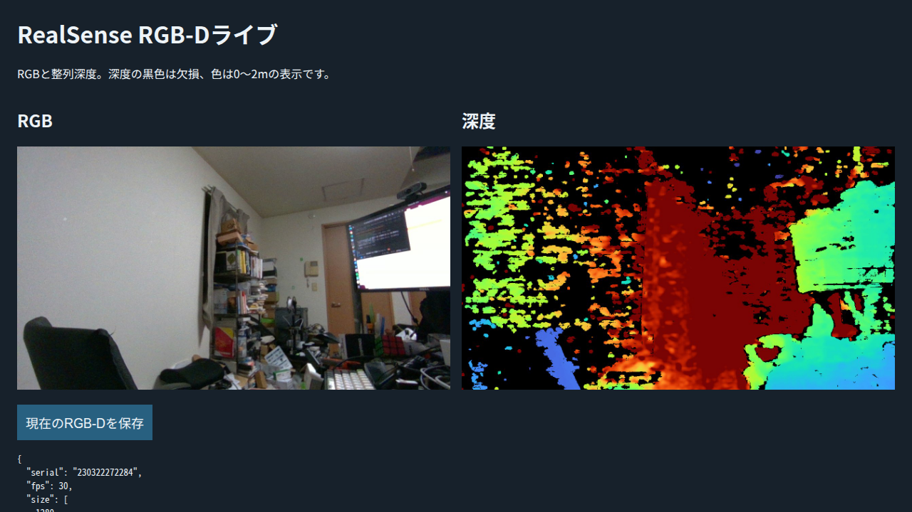

撮影レビュー・D405接続確認
2026年10月4日 · Codex単独作業。今回の確認はカメラ取得とコード整理です。
コードと作業手順
旧写真とRGB-D撮影のコマンドループ、再開ログ、RAM復元を共通化しました。
撮影済みデータは保持しています。ロボット通信・動作は行っていません。
| 項目 | 結果 |
|---|
| 検証対象テスト | 314 → 283件。重複41件を削除し、保存境界等の検証10件を追加。 |
| 最大循環的複雑度 | 39 → 10。上限10は維持。 |
| 修正した保存不具合 | 古いready、時刻の混在、短いログの先頭欠落、撮影前後の観測不足。 |
| 撮影の進め方 | 一枚で画質確認 → 撮影表 → 移動・2〜3秒保持 → 撮影・確認 → 次の姿勢。 |
手先D405の実取得
| 項目 | 実観測 |
|---|
| 機種・serial | Intel RealSense D405 · 230322272284 |
| 接続・ファームウェア | USB3.2 · 5.17.0.10 |
| SDKモード | RGB / Depth / IR左右：1280×720・30 FPS |
| 配信実測 | 15.76 Hz（整列・JPEGを含む） |
| 保存画像 | 2026-10-04 18:59:48 JST · uint16深度 · 有効率65.07% |
現在は室内と作業者が写っています。把持対象は画面内にありません。
撮影バッチの前に、対象の距離・構図・対象領域の深度を確認します。
実カメラパラメータ ·
校正TOML ·
原深度PNG
D405のRGB歪み係数は非ゼロのため、現行pinhole点群exportは拒否します。
RGB-D取得の確認と、点群変換の対応状況は分けて記録しています。

専用Playwrightで確認した実ライブ表示。
ライブ：D405 RGB-Dビューア ·
詳細レビュー · 作業書・記録